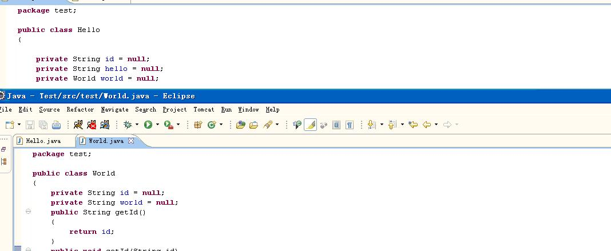
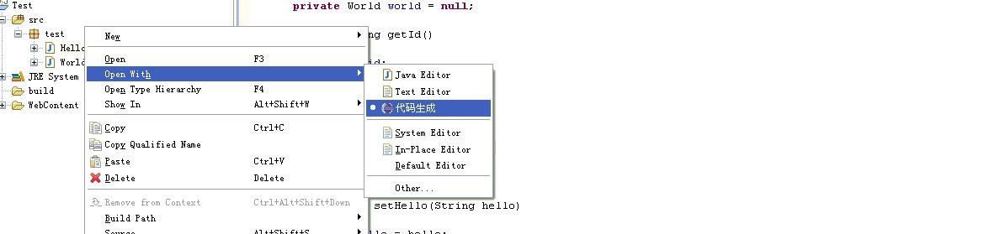
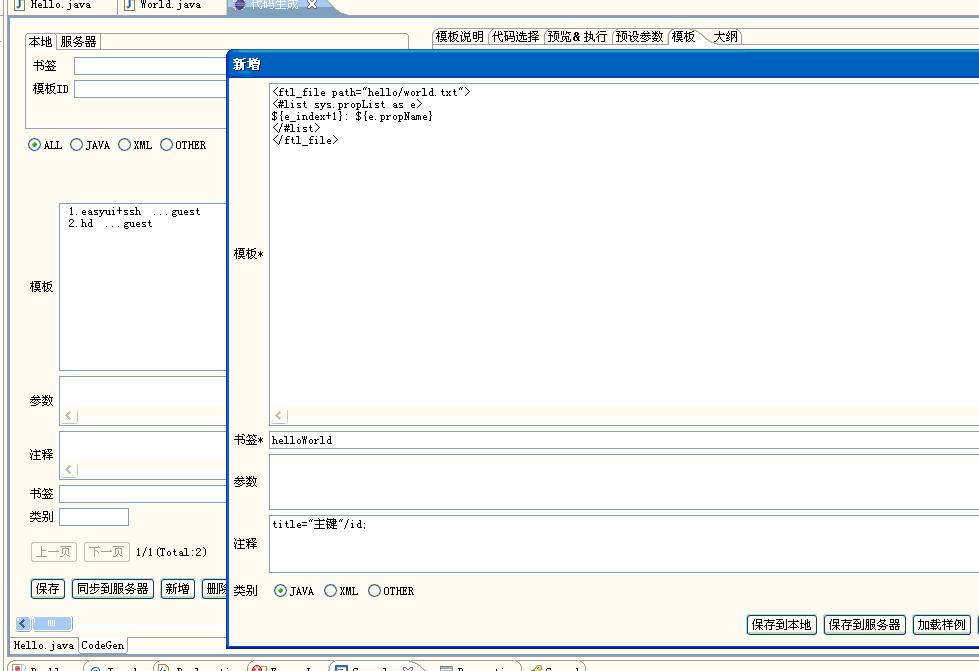
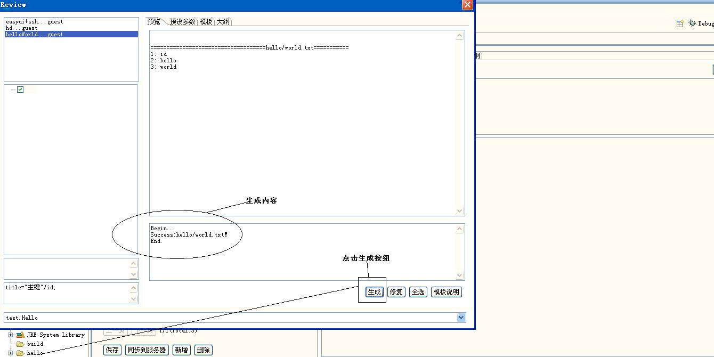
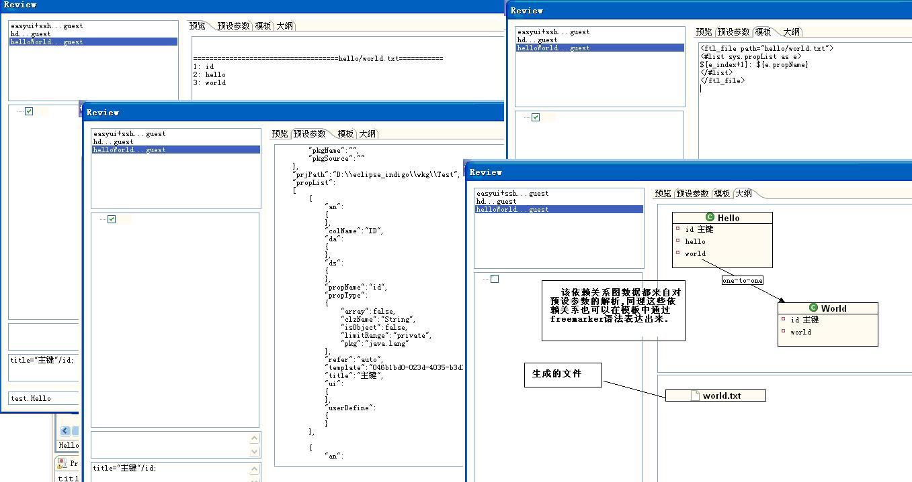

1.创建两个java文件Hellow.java, World.java,见下:

2.选中一个java文件,右键->打开方式->代码生成:

3.用代码生成编辑器打开该java文件后,如下图创建一个HelloWorld模板,最后点击 "保存到本地".
模板内容
<ftl_file path="hello/world.txt"> <#list sys.propList as e> ${e_index+1}: ${e.propName} </#list> </ftl_file>

4.选中Hello.java文件,右键->预览代码

5.操作介绍
